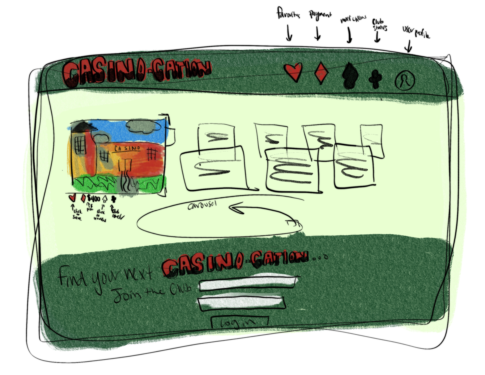

Abstract Expressionist Still Life | Peter Saul

Click to Download PDF of Analysis
In this exercise, our design class was asked to visit an art museum
and analyze a piece based on the principles we have discussed in
class. In visiting the Sheldon Art Museum in Lincoln, NE, I noticed
the colorful, vibrant work of Peter Saul’s Abstract Expressionist
Still Life. Peter Saul was born in San Fransisco, CA, where he
started his career working on pop culture cartoon references. He is
considered to be one of the fathers of the Pop Art movement (Tauer).
His work is typically pop art, surrealism, or expressionism, with
varying categories on occasion. His work has historically reflected
current events, though he claims that more recently he has focused
his work to turn away from his political past. The work I found in
the Sheldon was done as an acrylic on canvas in 2016. This piece
follows his tradition of relating pop art to political events,
having quoted, “I have a feeling that abstract expressionism was
caused by a certain nervousness that came about because of World War
II. I think everybody was drinking coffee and smoking, and it made
everyone so jittery they couldn't paint buttons and noses and
things, you know; they just couldn't do it. Their patience was shot
by the war.”
Color Balance:
The piece encompasses a wide range of colors, but the most notable
throughout is the use of the red and pink tones that take up the top
half of the work. The piece is overall very warm, with yellow
undertones throughout the use of greens and blues. The artwork
correlates almost directly with the “6, 3, 1” rule of UI (Jeph). 60%
of the piece is red (or pink), taking up the primary background
color, the two cars, and a majority of the liquid splashing. 30% of
the piece is the secondary color (yellow) – taking up a third of the
background as well as a few placements through cheese slices or
hands holding wine glasses and coffee cups. The final 10% of the
piece takes on a variety of accent colors: blue, orange, green, and
brown. These colors draw more attention from the viewer since they
“stick out”, but because the use of these accents is drawn across
the entirety of the work, the viewer has to keep looking around the
piece with no direct spot to land (see Direction of the Eye for
details).
Emotive Colors:
As described above with the 6, 3, 1 rule, the piece is dominated by
red and pink shades – which embody the hopeful, immature, energized,
nature the piece embodies. The war was distracting and overwhelming
– so were the colors and movements of this piece. In the reading by
Arnheim, the author describes, “More generally, it is probably the
expressive qualities … that spontaneously affect the passively
receiving mind, whereas the tectonic structure of [a] pattern
…engages the actively organizing mind.”. This reading has some
outdated language, but the main idea is that the use of colors to
express emotion – specifically in pattern forms – engages more
emotional centers of the brain rather than exclusively visual
processors. (Arnheim 336) The reading goes on to suggest that the
use of colors evokes an emotional response based on the color’s
emotive history (red = passion, blue = serenity, etc). The muted
colors of green and yellow bring the element of balance and
youthfulness to the piece without distracting too much from the red
hues. Also worth noting is the blue is the least present color in
the peace, which emphasizes how this was a time without much
stability or peacefulness for the viewers (relating to WWII).
Direction of the Eye (Motion in the Piece):
Movement is arguably the most influential component of this piece.
“The focus is “guided” in a composition… the visual representation
of movement, for example, a speeding car or someone running, or the
illusion or implication of it” (Meyer) The reading describes how art
can easily guide a viewer’s eyes to the intended motion of a piece,
but in Saul’s work noted above there is intentionally no direction
for the eyes to land on. There is clear movement in the liquids from
the cup and the shrinking and expansion of legs and cars to keep the
eye moving towards one end, but the images mash into each other to
keep the eye circling throughout the piece. This is what Meyer
describes as “implied movement”: “We can look at implied movement as
an action that is about to occur or the suggestion of a movement.
This can also involve the transition between two movements. An
example often used is the transition between someone walking and
running, or dancing, or someone throwing a ball. This can be
depicted by placing the focus on the figure’s posture, which can be
“off-center” or “off-balance” to convey a sense of transition in
motion” (Meyer). When analyzing this piece with the rule of thirds,
the grid doesn’t line up with any particular subjects in a clear
frame or aligned on a powerpoint, this also enhances the motion
since there is no comfortable place for the viewer to find an object
– they have to continue scanning through the scene which adds to
Saul’s description of unrest the piece embodies. Even the background
of the piece is morphed into itself, giving everything this
destructive, melted feeling.
Citations:
Arnheim, Rudolf, Art and Visual Perception, University of California
Press, Berkely, 1974, p. 336
Jeph, Priyanka. "An Understanding of Colors for UI Design." 24 June
2020,
https://www.qed42.com/insights/coe/design/understanding-colors-ui-design#:~:text=While%20using%20the%206%3A3,one%20point%20to%20another%20comfortably
Meyer, Isabella. (2023, March 9). Movement in Art – Exploring the
Use of Visual Movement in Art. Retrieved August 8, 2023, from
https://artincontext.org/movement-in-art/
Saul, Peter. "Abstract Expressionist Still Life." Acrylic on canvas,
2016. University of Nebraska-Lincoln, Olga N. Sheldon Acquisition
Trust. U-6563.2016
Tauer, Kristen. "Peter Saul Hasn’t Run Out of New Subjects to Paint:
The 86-year-old painter is showing his latest works in concurrent
New York gallery shows at Venus Over Manhattan and Michael Werner
Gallery." May 18, 2021,
https://wwd.com/feature/peter-saul-new-paintings-venus-over-manhattan-michael-werner-gallery-1234824379/
UI Sketch This UI is for a casino/hotel service that lets your experience be as authentic as possible to the casino lifestyle before stepping through the doors. You can makr favorites, see pricing, compare club levels, and get notified of changes. There is the use of the complementary green and red as pictured in Saul's work to keep the eye moving around the page but also physical movement with the carousel of casino options constantly and freely moving to never let a user get too comfortable in one spot on the page. The use of green and red play into the viewers emotions to correlate with money, excitement, and passion.
